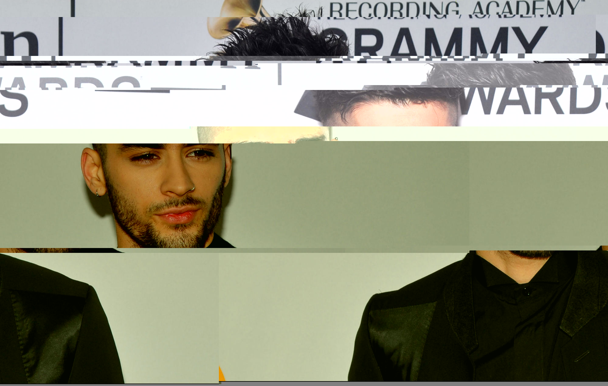

DMA
 📸 Zayn Malik Glitch 📸
Audacity
2000 × 1270
During this glitch experimentation, I practiced on something I knew familiarly. I chose a photo of Zayn Malik since he is someone that I could place in anything conceptual, especially since I found him very interesting. I chose a photo that was taken on the red carpet for the Grammys. When I was listening to the Audacity file, It was very static-y almost like small little screams here and there, not scary ones but similar to the sound I once heard when I went to see him in concert with the other 4 group members. Going to a One Direction concert was quite the experience, especially when you would leave the venue with blared-out ears from the constant screams that my ears took in.
When I was moving and deleting some of the code around, a section of exposure was revealed. I immediately thought about flash photography that is familiarized with red-carpet events. When watching the red carpets live on tv, the flash photography often strobes against the individual, and therefore this reminded me of that, especially when the individual moves from their spot. I also wanted to discuss the distinctiveness in which we idolize these individuals, although they are just like you and me. What also made me realize is that some of us can recognize these individuals just by their face, hair, stature, or clothes really is mesmerizing because of our interest in media and culture.